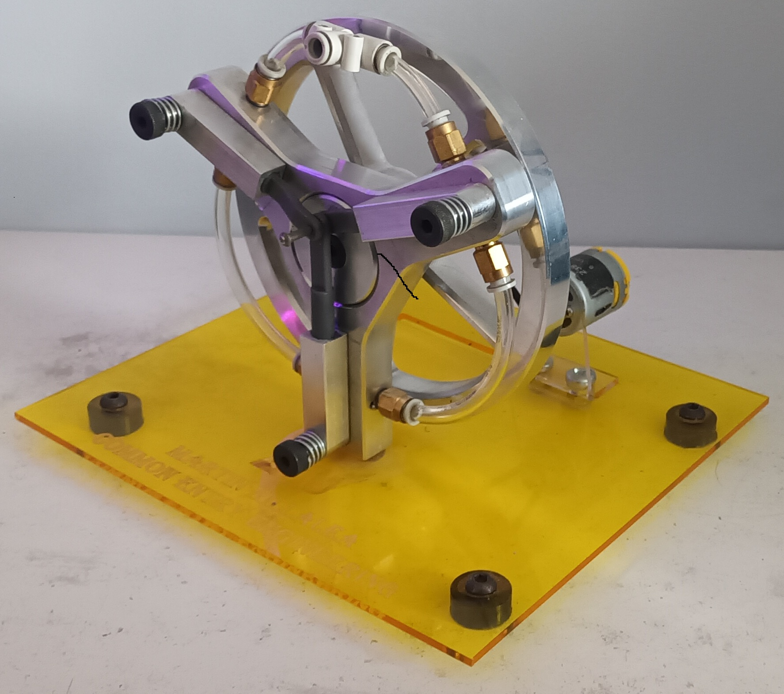

Hello, I'm Martin Killalea
Profile Summery
A fourth-Year student of the BEng (Hons) in Mechanical Engineering in Atlantic Technological University. My skills include Mathes, Physics, Thermodynamics, CAD and CAM software, G-code, Engineering and machine design. I enjoy challenges, finding solutions to problems, prototyping ideas and learning new things. I am well organised punctual and hardworking, usually during team projects I would take on the harder challenges of the project such as the design of the project, Creo assembly and currently the wiring and software of our main project of third year.
Interests and achievements • Achieved green belt in Jiujitsu • I enjoy playing videogames • Enjoy learning history and science in my own time • Full clean driving license • Built my own PC • Learning electronics at home
Education
Results
2016 – 2023, St. Killian’s College, New Inn, Galway
| level | Subject | Result |
|---|---|---|
| Higher | Maths | H3 |
| Higher | Buisness | H3 |
| Higher | Engineering | H2 |
| Higher | D.C.G | H2 |
| Higher | Agricultural Science | H2 |
| Common | Link Modules | Distinction |
| Lower | English | O2 |
2023 - Now Atlantic Technical University
1st year
1st year
| PoT | Course Title | Final Grade % |
|---|---|---|
| 1 | Computer Aided Design 1 | 60 |
| 1 | Engineering in Business | 90 |
| 1 | Engineering Science | 78 |
| 1 | Mechanical Dissection | 75 |
| 1 | Manufacturing Engineering 1 | 71 |
| 1 | Electrical Science | 66 |
| 1 | Academic and Professional Skills | 66 |
| 1 | Mathematics 1 | 87 |
2nd year
| PoT | Course Title | Final Grade % |
|---|---|---|
| S2 | Manufacturing Automation 2 | 80 |
| 1 | Manufacturing Engineering 2 | 77 |
| 1 | Computer Aided Design II | 67 |
| S2 | Thermodynamics | 67 |
| S2 | Mechanics and Properties of Materials | 65 |
| S2 | Mathematics 3 | 75 |
| 1 | Statics and Dynamics | 59 |
| S1 | Manufacturing Automation 1 (Pneumatics) | 54 |
| S1 | Mechanics and Dynamics of Machines | 61 |
| S1 | Mathematics 2 | 70 |
| S1 | Fluid Mechanics | 56 |
3rd year
| PoT | Course Title | Final Grade % |
|---|---|---|
| 1 | Instrumentation and Control | 82 |
| 1 | Manufacturing Automation 3 | 73 |
| 1 | Numerical Methods and Programing | 70 |
| 1 | Machine Design | 57 |
| 1 | Heat Transfer | 42 |
| 1 | Six Sigma | 62 |
| 1 | Advanced Manufacturing Processes | 48 |
| 1 | Professional Practice for Mechanical Engineers | 67 |
| 1 | Engineering Design | 53 |
Projects
Model Electric Tracked Skateboard:
Leaving Cert. Engineering. Individual
Designed from scratch this involved designing Tracked propulsion and fold down handlebars. Most parts were manufactured by hand excluding the nuts, bolt, buttons, battery holders, wires, spring, Gears, wheels and track. Also my first experience with soldering.

Rebuild and design new clock:
Leaving Cert. Tech Graph. Individual
For this project I had to take apart and model up an already existing clock on sketch up. Then I had to make a new design of a possible clock and build it in sketch up.


3 Sisters Air Engines:
1st Year, Individual
This project was primarily manufactured using CNC milling machines and Manual Lathes before being assembled and polished by hand

CNC Machined Pen
CNC Pen: 2nd Year, Individual For this project we used a CNC lathe programmed by G-code using EMCO – WinNC software.

Automated Injection Moulding Machiene
3rd Year, 7 Members
This is our main project for this year we will be using Creo Parametric (PTC) to design and manufacture using CNC mills lathes 3d printers and Laser cutters. We coded the (plc) with Cscape ladder logic and wired it by hand
Work Experience
2017-Present: farming Role: Farmhand Responsibilities:
- Managing livestock and feeding practices
- Operating farm machinery tractors primarily
- Assisting birthing processes and following veterinary advice
- Helping to build sheds
- Sheering sheep
- Moving sheep
- Setting up pens
Summer 2021: Sheep shearing
Role: Sheep Shearing Aid Responsibilities:- Keep the site clean to prevent accidents
- Cleaned houses so that others could do their jobs without having to move debris out of the way
- Put up frames inside houses to help support the blocks being used to build the second floor
- Informed the foreman of any issues I spotted while working
- Removed barbed wire from trees so they could be safely removed
- Responsible as spotter for a digger operator while looking for pluming pipes
- Took stock of the different lentils and sills on the site
- Aided in any job that required an extra set of hands
Summers 2022-2023: Kellmin construction
Role: General labourer Responsibilities:- Stack blocks beside where they were needed
- Keep the work area clean
- Mixed the cement mainly from a cement silo as well as a cement mixer on off site jobs
- Organised movement of the cement buckets to where they were needed
- Set up frames and boards for when the walls were higher
- Helped put in the lentils and sills for windows and doorways
Summer 2024: Adain Clogher’s Block laying
Role: Block layers assistant Responsibilities:Contacts
Contacts
Email: martintkillalea@gmail.com